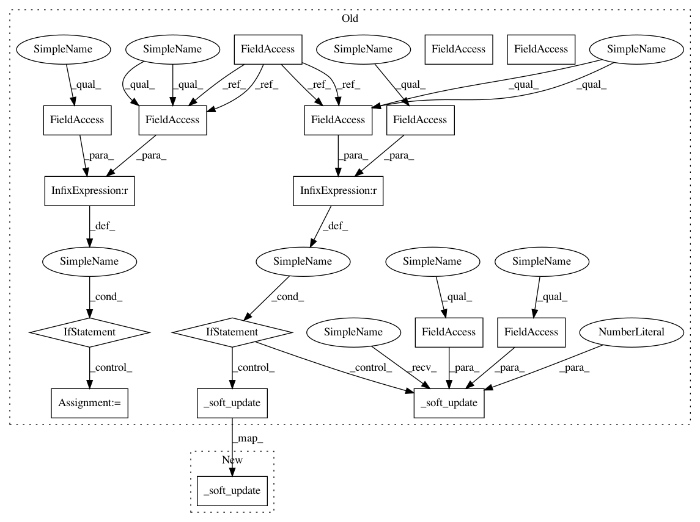

a18d8941f663eea55488781c804e6305a36f1b58,ml/rl/training/parametric_dqn_trainer.py,ParametricDQNTrainer,train,#ParametricDQNTrainer#Any#,57
Before Change
training_batch = training_batch.as_parametric_sarsa_training_batch()
learning_input = training_batch.training_input
self.minibatch += 1
reward = learning_input.reward
not_done_mask = learning_input.not_terminal
discount_tensor = torch.full_like(reward, self.gamma)
if self.use_seq_num_diff_as_time_diff:
assert self.multi_steps is None
discount_tensor = torch.pow(self.gamma, learning_input.time_diff.float())
if self.multi_steps is not None:
discount_tensor = torch.pow(self.gamma, learning_input.step.float())
if self.maxq_learning:
all_next_q_values, all_next_q_values_target = self.get_detached_q_values(
learning_input.tiled_next_state, learning_input.possible_next_actions
)
// Compute max a" Q(s", a") over all possible actions using target network
next_q_values, _ = self.get_max_q_values_with_target(
all_next_q_values.q_value,
all_next_q_values_target.q_value,
learning_input.possible_next_actions_mask.float(),
)
else:
// SARSA (Use the target network)
_, next_q_values = self.get_detached_q_values(
learning_input.next_state, learning_input.next_action
)
next_q_values = next_q_values.q_value
filtered_max_q_vals = next_q_values * not_done_mask.float()
if self.minibatch < self.reward_burnin:
target_q_values = reward
else:
target_q_values = reward + (discount_tensor * filtered_max_q_vals)
// Get Q-value of action taken
current_state_action = rlt.StateAction(
state=learning_input.state, action=learning_input.action
)
q_values = self.q_network(current_state_action).q_value
self.all_action_scores = q_values.detach()
value_loss = self.q_network_loss(q_values, target_q_values)
self.loss = value_loss.detach()
self.q_network_optimizer.zero_grad()
value_loss.backward()
self.q_network_optimizer.step()
// TODO: Maybe soft_update should belong to the target network
if self.minibatch < self.reward_burnin:
// Reward burnin: force target network
self._soft_update(self.q_network, self.q_network_target, 1.0)
else:
// Use the soft update rule to update target network
self._soft_update(self.q_network, self.q_network_target, self.tau)
// get reward estimates
reward_estimates = self.reward_network(current_state_action).q_value
reward_loss = F.mse_loss(reward_estimates, reward)
self.reward_network_optimizer.zero_grad()
reward_loss.backward()
After Change
self.q_network_optimizer.step()
// Use the soft update rule to update target network
self._soft_update(self.q_network, self.q_network_target, self.tau)
// get reward estimates
reward_estimates = self.reward_network(current_state_action).q_value
reward_loss = F.mse_loss(reward_estimates, reward)
In pattern: SUPERPATTERN
Frequency: 4
Non-data size: 17
Instances
Project Name: facebookresearch/Horizon
Commit Name: a18d8941f663eea55488781c804e6305a36f1b58
Time: 2019-04-18
Author: jjg@fb.com
File Name: ml/rl/training/parametric_dqn_trainer.py
Class Name: ParametricDQNTrainer
Method Name: train
Project Name: facebookresearch/Horizon
Commit Name: a18d8941f663eea55488781c804e6305a36f1b58
Time: 2019-04-18
Author: jjg@fb.com
File Name: ml/rl/training/sac_trainer.py
Class Name: SACTrainer
Method Name: train
Project Name: facebookresearch/Horizon
Commit Name: a18d8941f663eea55488781c804e6305a36f1b58
Time: 2019-04-18
Author: jjg@fb.com
File Name: ml/rl/training/parametric_dqn_trainer.py
Class Name: ParametricDQNTrainer
Method Name: train
Project Name: facebookresearch/Horizon
Commit Name: a18d8941f663eea55488781c804e6305a36f1b58
Time: 2019-04-18
Author: jjg@fb.com
File Name: ml/rl/training/ddpg_trainer.py
Class Name: DDPGTrainer
Method Name: train
Project Name: facebookresearch/Horizon
Commit Name: a18d8941f663eea55488781c804e6305a36f1b58
Time: 2019-04-18
Author: jjg@fb.com
File Name: ml/rl/training/dqn_trainer.py
Class Name: DQNTrainer
Method Name: train